被動展示
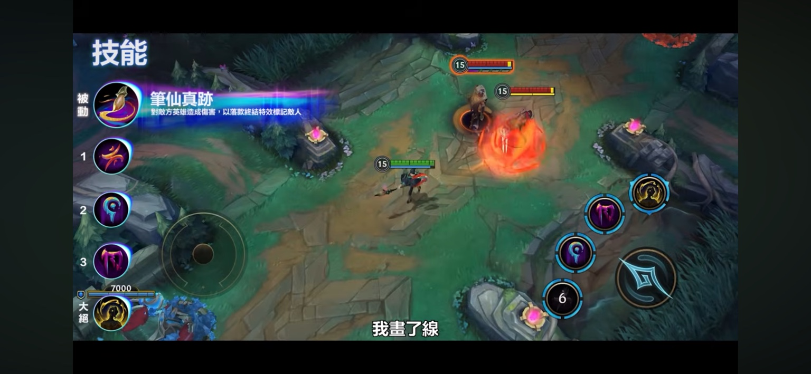
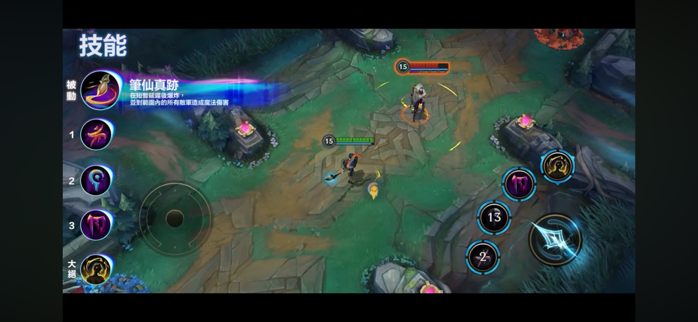
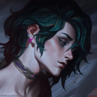
NEW CHAMPION · HWEI
三種主題、九種施法，用畫筆在傷害、保護與控制之間切換。
本頁保留技能示範圖片；完整攻略請由英雄列表查看。
例如「1 → 2」代表先按一技進入厄禍筆法，再按二技施放該主題的第二種技能；不是連續施放兩個不同主題。下方截圖可點開放大。
練習時先熟悉每種主題的三個選項，再練習切換與取消。技能數值、冷卻與魔力消耗以目前遊戲內說明為準。
傷害技能命中敵方英雄後，以筆跡標記目標 4 秒。
再次以傷害技能命中被標記的敵人會消耗標記，片刻後在其下方爆炸，對範圍內敵人造成 33–333（隨等級）＋33% 魔攻的魔法傷害。每項技能只能對同一目標觸發此效果一次。
數值與冷卻依使用者提供的遊戲內截圖（IMG_8876–8880）記錄；截圖未標示完整技能等級與加成條件，並非各級成長表。魔攻指魔法攻擊。
傷害主題：選取主題後，再選擇三種施法之一。截圖顯示冷卻：9.5 秒。
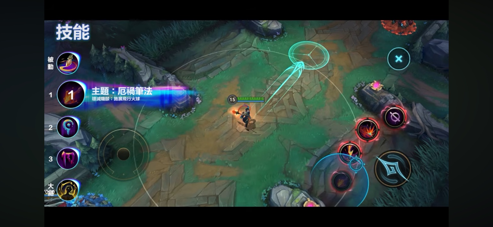
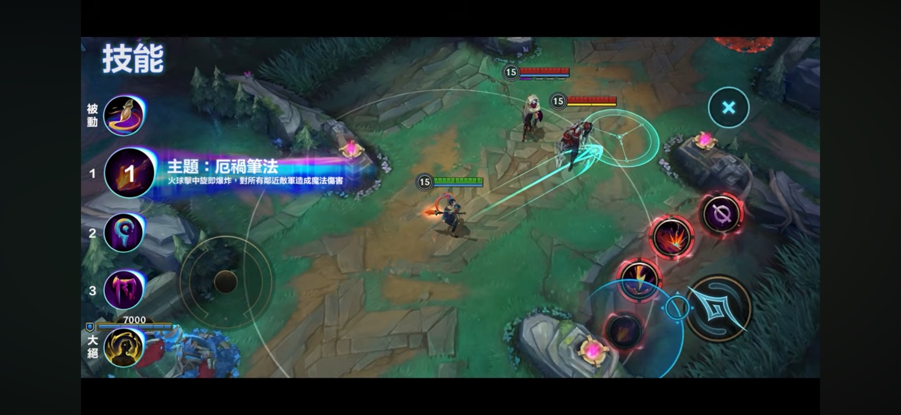
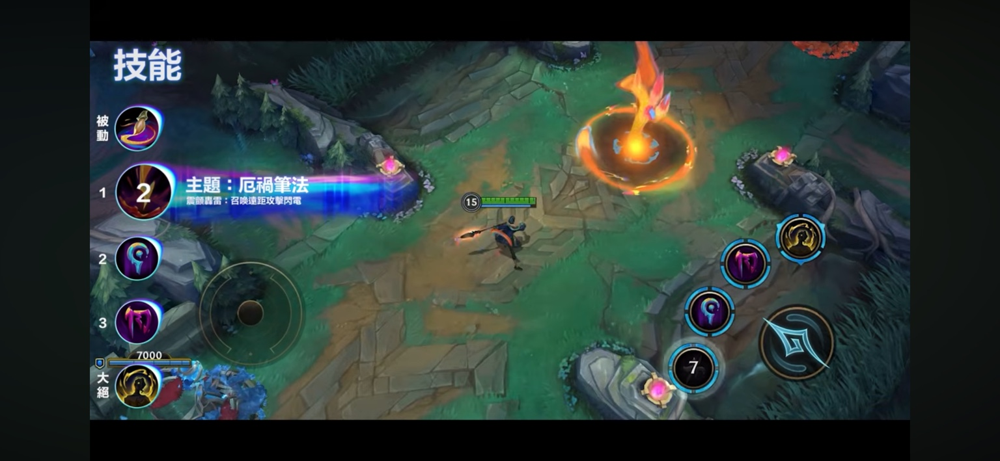
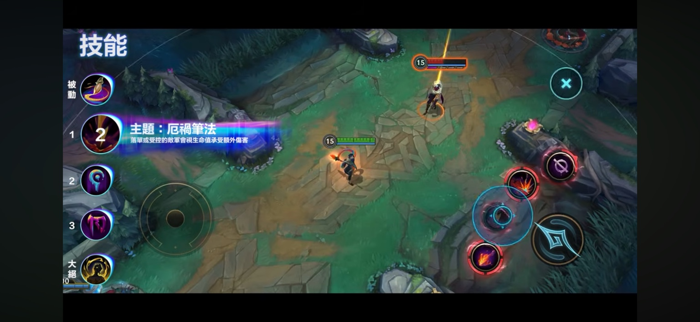
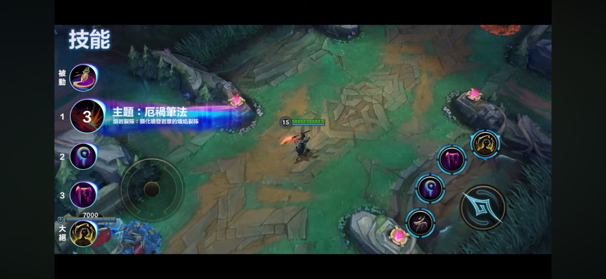
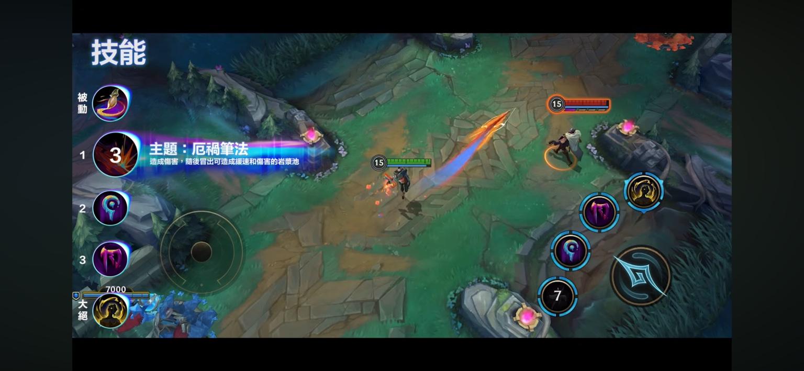
增益主題：提供移動、護盾或回魔效果。截圖顯示冷卻：17 秒。
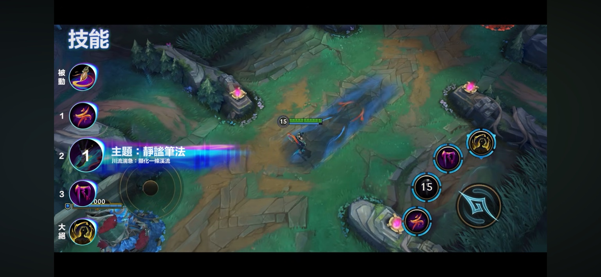
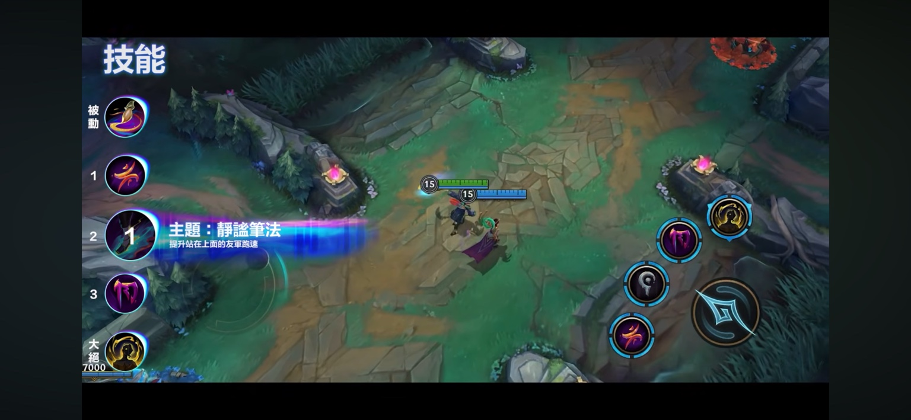
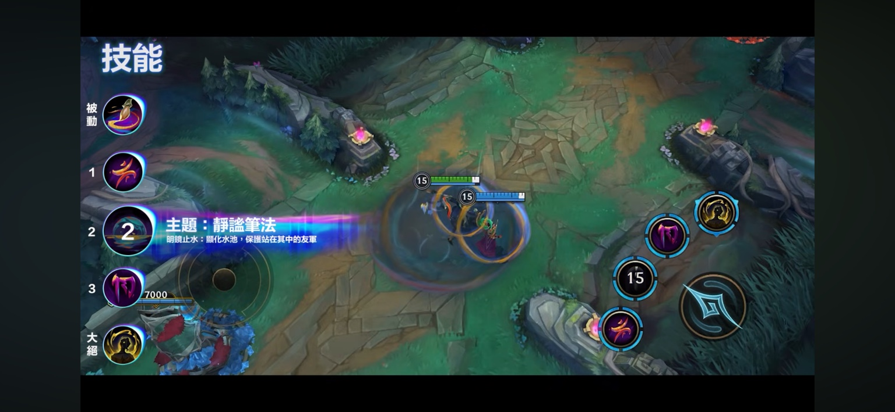
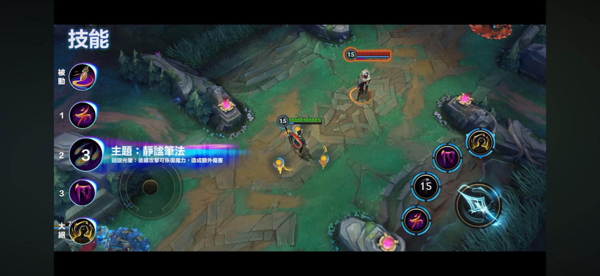
控制主題：阻止突進、限制走位或集中敵人。截圖顯示冷卻：13 秒。
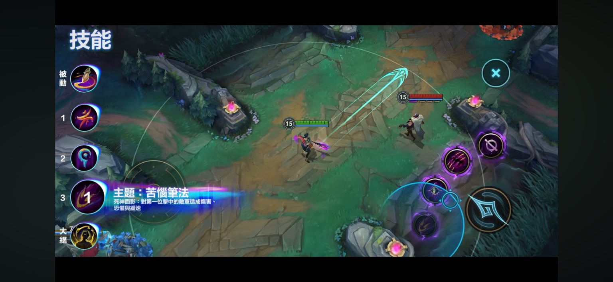
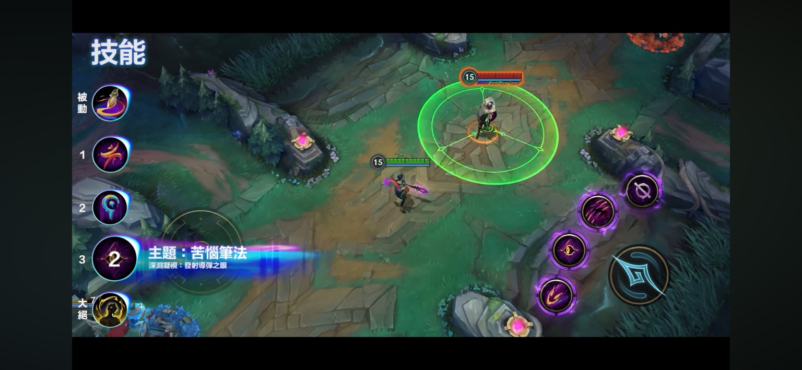
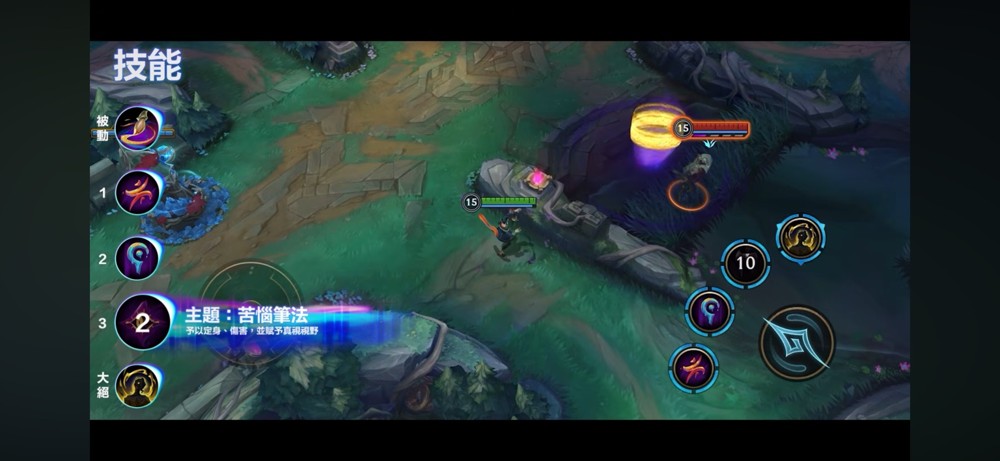
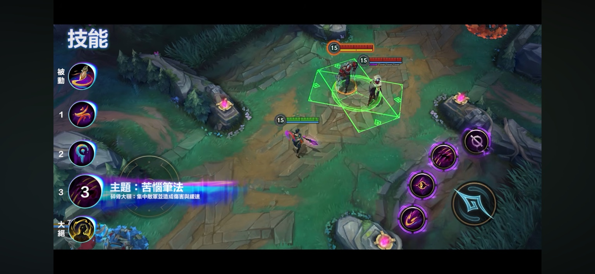
發射絕望幻象，附著在敵方英雄身上 3 秒並逐漸擴大。截圖顯示冷卻：70 秒。
對敵人施加 10% 緩速，每 0.25 秒累加一次；每秒造成 10＋5% 魔攻的魔法傷害。
幻象擴張至極限後碎裂，造成 250＋75% 魔攻的魔法傷害。
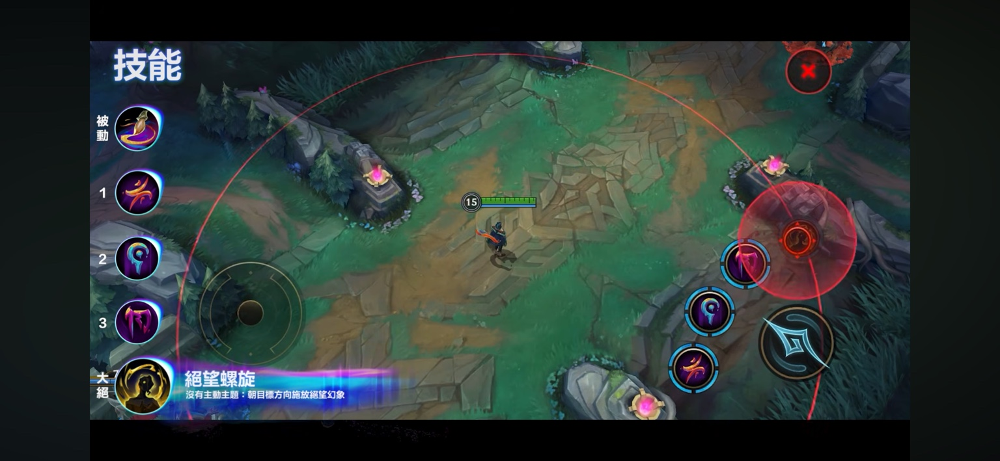
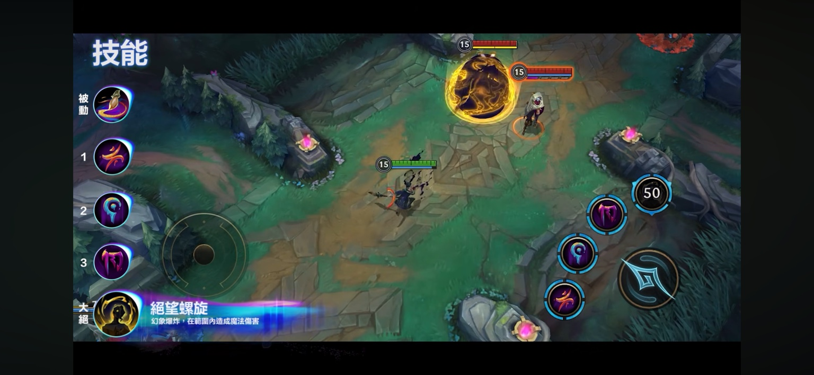
啟用主題後，大絕按鈕會變成「清洗毛筆」。按下可退出目前主題，回到原本技能選單；不要把這個操作誤認為施放大絕。
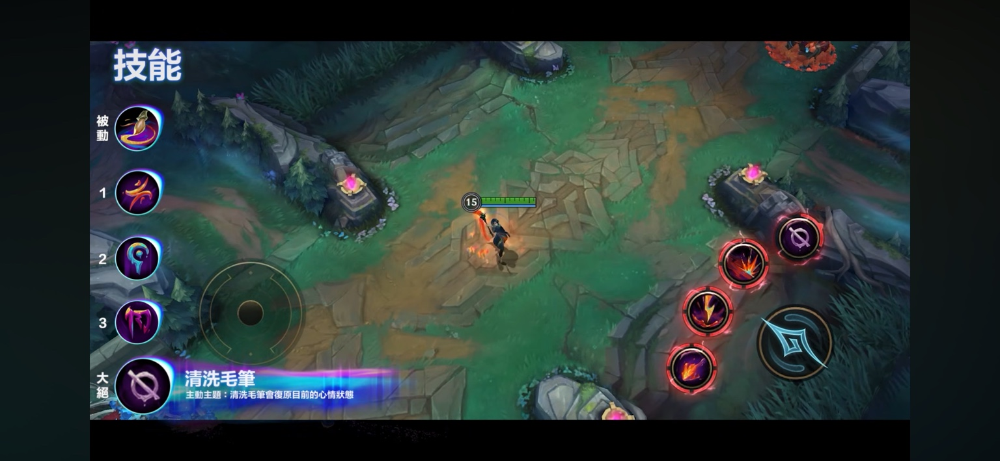
配置參考 WildRiftFire 赫威攻略（頁內標示 7.3；部分技能欄位仍未完成）；版本背景核對 Riot 7.3 公告。A 級及情境取捨為本站編輯判断，並非來源的 Tier。未採用來源的零值技能數字。
依提供的繁體中文激鬥峽谷技能介紹截圖整理，更新日期：2026/09/22。未確認的數值不填入，未以電腦版數值替代。
Riot 官方最新消息 · 原有英雄攻略 · 找隊友